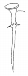
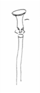
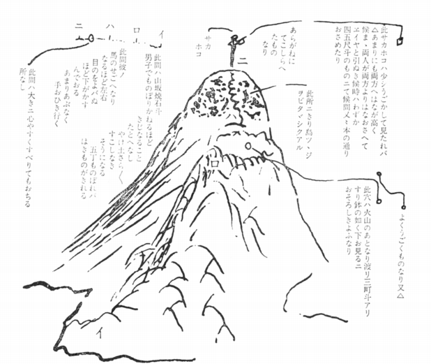

おとめさんにさし上る。
兼而申上妻龍女ハ、望月亀弥太が戦死の時の
なんにもあい候もの、又御国より出候もの此家ニて大ニセ話ニなり候所、此家も国家をうれへ候より家をほろ
こし候也。老母一人、龍女、いもと両人、男の子一人、
かつへ／＼ニて、どふもきのどくニて、龍女と十二歳ニなる妹と九ツニなる男子をもらい候て、十二歳の妹名きみへ、男子太一郎ハ摂州神戸海軍所の勝安房ニ頼ミたり。龍女事ハ伏見寺田や家内おとせニ頼ミ候。
（是ハ学文ある女尤人物也。）今年正月廿三日夜のなんにあいし時も、此龍女がおれバこそ、龍馬の命ハたすかりたり。京のやしきニ引取て後ハ小松、西郷などにも申、私妻と
為レ知候。此よし兄上ニも御申可
レ被
レ遣候。御申上なれバ、
［＃ここから２段組み］
京師柳馬場三条下ル所、
楢崎将作（死後五年トナル。）
右妻存命
私妻ハ則、将作女也。
今年廿六歳、父母の付
たる名龍、私が又鞆トあらたむ。
［＃改段］
此所にすミしが、
国家のなんとともニ
家ハほろびあとなく
なりしなり。
［＃ここで段組み終わり］
正月廿三日ののちナリ。
京の屋鋪ニおる内、二月末ニもなれバ嵐山にあそぶ人

、なぐさみにとて桜の花もて来り候。中ニも中路某の老母
（神道学者奇人也）ハ実おもしろき人也。和歌などよくで来候。此人共私しの咄しおもしろがり、妻をあいして度々
遣をおこす。此人ハ曽て中川宮の姦謀を怒り、これおさし殺さんとはかりし人也。
本 禁中ニ奉
行して
おれバ、右よふの事ニハ、尤遣所おゝき人ナリ。公卿方など不
レ知者なし。是より三日大坂ニ下り、四日に蒸気船ニ両人共ニのり込ミ、長崎ニ九日ニ来り十日ニ鹿児島ニ至り、此時京
留居吉井幸
助も
どふ／＼ニて、船中ものがたりもありしより、又温泉ニともにあそバんとて、吉井がさそいにて又
両りづれにて
霧島山の方へ行道にて
日当山の温泉ニ
止マリ、又しおひたしと云温泉に行。此所ハもお
大隅の国ニて和気清麻呂が
いおりおむすびし所、
蔭見の滝其滝の布ハ五十間も落て、中程にハ少しもさわりなし。実此世の外かとおもわれ候ほどのめづらしき所ナリ。此所に十日計も止りあそび、谷川の流にてうおゝつり、
短筒をもちて鳥をうちなど、まことにおもしろかりし。是より又山深く入りてきりしまの温泉に行、此所より又山上ニのぼり、
あまのさかほを見んとて、妻と両人づれニてはる／″＼のぼりしニ、
立花氏の西遊記ほどニハなけれども、どふも道ひどく、女の足ニハむつかしかりけれども、とふ／＼馬のせこへまでよぢのぼり、此所にひとやすみして、又はる／″＼とのぼり、ついにいたゞきにのぼり、かの
天のさかほこを見たり。其形ハ
是ハたしかに天狗の面ナリ。両方共ニ其顔がつくり付てある。からかね也。

まむきに見た所也。

やれ／＼とこしおたゝいて、はるバるのぼりしニ、かよふなるおもいもよらぬ
天狗の面があり、大ニ二人りが笑たり。此所に来れバ実ニ高山なれバ目のとゞくだけハ見へ渡り、おもしろかりけれども何分四月でハまださむく、風ハ吹ものから、そろ／＼とくだりしなり。なる程きり島つゝじが一
面にはへて実つくり立し如くきれいなり。其山の
大形ハ、

霧島山より下り、きり島の社にまいりしが是は実大きなる杉の木があり、宮もものふり極
とふとかりし。其所ニて一宿、夫より霧島の温泉の所ニ至ルニ、吉井幸助もまちており、とも／″＼にかへり、四月十二日ニ鹿児島ニかへりたり。夫より六月四日より桜島と言、蒸気船ニて長州へ使を頼まれ、出船ス。此時妻ハ長崎へ月琴の稽古ニ行たいとて同船したり。夫より長崎のしるべの所に頼ミて、私ハ長州ニ行けバはからず別紙の通り軍をたのまれ、一戦争するに、うんよく打勝、身もつゝがなかりし。其時ハ長州侯ニもお目ニかゝり色
御咄しあり、
らしやの西洋衣の地など送られ、夫より
国ニかへり、其よしを申上て二度長崎へ出たりし時ハ、八月十五日ナリ。世の中の事ハ月と雲、実ニどフなるものやらしらず、おかしきものなり。うちにおりてみそよたきゞよ、年のくれハ米うけとりよなどよりハ、天下のセ話ハ実ニ
おふざツパいなるものニて、命さへすてれバおもしろき事なり。是から又春になれバ妻ハ鹿児島につれかへりて、又京師の戦はじまらんと思へバ、あの方へも事ニより出かけて見よふかとも思ひよります。私し其内ニも安心なる事ハ、西郷吉之助の家内も吉之助も、大ニ心のよい人なれバ此方へ妻などハ頼めバ、何もきづかいなし。
此西郷と云人ハ七年の間、島ながしニあふた人にて候。夫と言も病のよふニ京の事がきになり、先年初て「アメリカ」ヘルリ」が江戸ニ来りし頃ハ、薩州
先ン
侯の内命ニて水戸に行、藤田
虎之助の方ニおり、其後又其殿様が死なれてより、朝廷お
うれい候ものハ殺され、島ながしニあふ所に、其西郷ハ島流の上ニ其地ニて
ろふニ入てありしよし、近頃鹿児島にイギリスが来て戦がありてより国中一同、彼西郷吉之助を恋しがり候て、とふ／＼引出し今ハ政をあづかり、国の進退此人にあらざれバ一日もならぬよふなりたり。
人と言ものハ短気してめつたニ死ぬものでなし。又人おころすものでなしと、人
申あへり。まだ色
申上度事計なれども、いくらかいてもとてもつき不
レ申、まあ
鳥渡した事さへ、此よふ長くなりますわ。かしこ／＼。
乙様